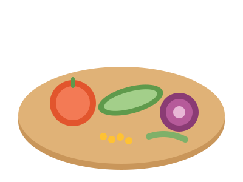

Om oss
Velkommen til Quick Bite!
Quick Bite er et gatekjøkken i Gjesdalveien 30 i Sandnes. Vi lager kebab, kyllingruller, falafel og burgere, og alt lages når du bestiller.

- 3slags ruller: kebab, kylling og falafel
- Hjemmelagdeaioli og kebabsauser
- 01:30åpent til natt til søndag
- Wolt + foodoralevering i Sandnes

Laget på bestilling
Ferskt brød og egne sauser
Rullene lages i ferskt brød, med storfekjøtt, kylling eller ferske falafler. Aiolien og kebabsausene lager vi selv, også en sterk variant for dem som vil ha mer styrke.
Kyllingburgeren er også hjemmelaget, servert i briochebrød med ost, krydret BBQ-saus og løkringer.
Bilde av eieren eller lokalet
Vår historie
Historien vår
…
Finn oss
Spis her, ta med, eller få det levert
Telefon
Åpningstider
- Mandag–fredag11:00–23:30
- Lørdag13:00–01:30
- Søndag12:00–23:30